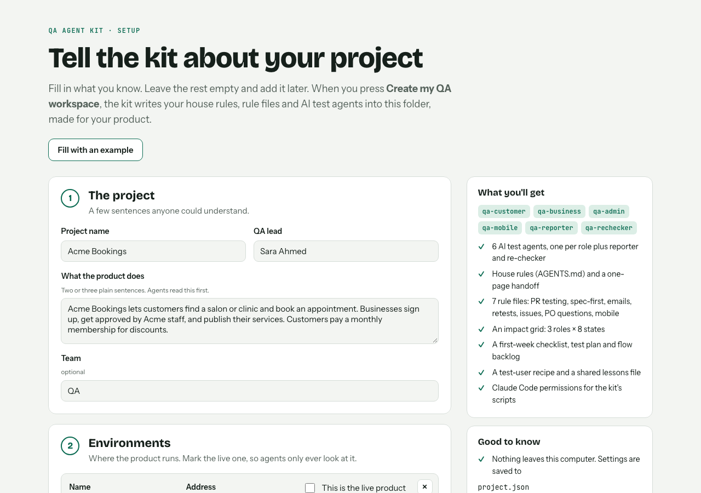

How we test any project with a team of AI testers. In about a minute.

A fresh agent repeats every issue with clicks and real emails only. No shortcuts.
Grouped, with proof, and every use case marked Pass, Fail or Not covered.
Full guide in the README. Questions? Ask Ali Rizvi, QA.